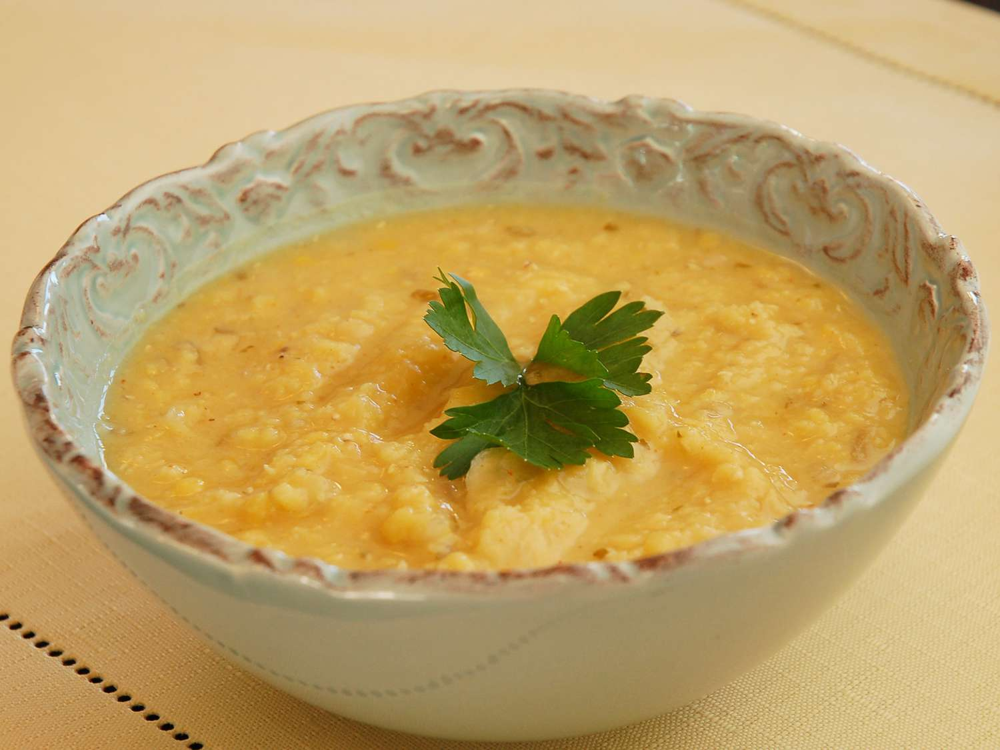

Lebanese-Style Red Lentil Soup

Recipe from
allrecipes.com
A quick, easy to make lentil soup recipe. Easily adjusted for personal taste and preferences
Ingredients
- 6 cups of chicken stock
- 1 pound red lentils
- 3 tablespoons olive oil
- 1 large onion, chopped
- 1 tablespoon minced garlic
- 1 tablespoon ground cumin
- 1/2 teaspoon cayenne pepper
- 3/4 cup fresh lemon juice
- 1/2 cup chopped cilantro
Directions
- Bring chicken stock and lentils to a boil in a large saucepan over high heat. Reduce heat to medium-low, cover, and simmer for 20 minutes
- Meanwhile, heat olive oil in a skillet over medium heat. Stir in onion and garlic; cook until onion has softened and turned translucent, about 3 minutes.
- Stir onion mixture into lentils; season with cumin and cayenne. Continue simmering until lentils are tender, about 10 minutes.
- Purée soup in a standing blender or with a stick blender until smooth. Stir in lemon juice and cilantro.
I did not create this recipe, this was simply used to practice creating a website. All credits go to Jen Yagoobian Pfister and allrecipes.com for this recipe